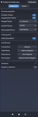

Ubuntu Budgie Grundlagen
Dieser Artikel wurde für die folgenden Ubuntu-Versionen getestet:
Dieser Artikel ist mit keiner aktuell unterstützten Ubuntu-Version getestet! Bitte diesen Artikel testen und das getestet-Tag entsprechend anpassen.
Zum Verständnis dieses Artikels sind folgende Seiten hilfreich:
Ein Terminal öffnen, optional
Budgie ist die Desktop-Umgebung des Solus-Betriebssystems  . Ihr Fokus liegt auf Einfachheit und Eleganz. Gleichzeitig kann sie einfach an die eigenen Bedürfnisse angepasst werden. Seit Ubuntu 17.04 gibt es auch das offizielle Ubuntu Budgie Derivat, welches Budgie als Desktop-Umgebung einsetzt.
. Ihr Fokus liegt auf Einfachheit und Eleganz. Gleichzeitig kann sie einfach an die eigenen Bedürfnisse angepasst werden. Seit Ubuntu 17.04 gibt es auch das offizielle Ubuntu Budgie Derivat, welches Budgie als Desktop-Umgebung einsetzt.
| Anmeldung |
| Arc Design unter Ubuntu Budgie 17.04 |
Beim ersten Start präsentiert Budgie Welcome neben Grundinformationen zur Oberfläche diverse Möglichkeiten, um mit der Community in Kontakt zu treten. Über die blauen Schaltflächen gelangt man zum Software-Center (Programminstallation) oder via "DEFAULT SETTINGS" zu den Grundeinstellungen des Systems. Hier kann das Aussehen der Oberfläche angepasst werden.
Durch Deaktivieren der Checkbox ("Show this dialog on startup?") wird der Bildschirm beim nächsten Start nicht mehr angezeigt. Sollte man diese Entscheidung bereuen, kann man über das Budgie-Menü die Anwendung suchen.
Aufbau¶
 |
| Budgie Menü |
Budgie Menu¶
Über die linke obere Ecke erreicht man das Budgie-Menü. Über dieses kann man schnell Zugriff auf die installierten Programme erlangen. Im Suchfeld kann das gewünschte Programm aufgerufen werden.
Zur Anpassung des Menüs startet man über "Einstellungen → Menübearbeitung" den Editor.
Desktop¶
Ein  -Klick auf die Arbeitsfläche öffnet ein Menü. Hier kann u.a. der Hintergrund geändert oder das Terminal gestartet werden.
-Klick auf die Arbeitsfläche öffnet ein Menü. Hier kann u.a. der Hintergrund geändert oder das Terminal gestartet werden.
| Dock |
Dock¶
An der linken Seite des Desktops ist eine Reihe nützlicher Programme aufgeführt. Über einen  -Klick auf der gewünschten Anwendung wird diese gestartet. Programme, welche über das Budgie-Menü gestartet worden sind, findet man als Symbol in der Leiste vor. An Standardprogrammen sind Rhythmbox (Audio), Eye of GNOME (Bildbetracher), Geary (Email), GNOME Kalender, Totem (Video) und Firefox (Internetbrowser) hinterlegt.
-Klick auf der gewünschten Anwendung wird diese gestartet. Programme, welche über das Budgie-Menü gestartet worden sind, findet man als Symbol in der Leiste vor. An Standardprogrammen sind Rhythmbox (Audio), Eye of GNOME (Bildbetracher), Geary (Email), GNOME Kalender, Totem (Video) und Firefox (Internetbrowser) hinterlegt.
Zur Anpassung des Menüs nach eigenen Bedürfnissen kann man mittels eines -Klicks ein Untermenü aufrufen. Durch Deaktivieren der Checkbox beim Punkt "Im Dock behalten" wird das Programm aus der Leiste entfernt. Bereits gestartete Programme können über das Symbol und einem -Klick hinzugefügt werden. Hier setzt man lediglich den Haken bei "Im Dock behalten". Zum Sortieren des Docks führt man einen -Klick auf die jeweilige Anwendung aus und hält die Taste gedrückt. Nun bewegt man das Icon an die gewünschte Stelle und lässt die Taste los.
|  |
| Raven |
Raven¶
Rechts oben im Panel findet man hinter dem Symbol das Widget Raven. Über dieses erhält man direkten Zugriff auf Funktionen wie den Kalender, Benachrichtigungen, Lautstärkeregelung, Steuerung des Media-Players, Benutzer- und Systemeinstellungen. Hinter dem Zahnrad verstecken sich weitere Optimierungsmöglichkeiten. Das Panel (Leiste) kann hier verändert, zusätzliche Applets können installiert und ihre Positionen in der Leiste definiert werden.
Über kann das System heruntergefahren werden.
Einstellungen¶
Die Systemeinstellungen findet man im Budgie Menü unter "Einstellungen → Einstellungen".
Hilfe¶
Tastenkürzel¶
| Tastenkürzel | |
| Taste(n) | Auswirkung |
| Super | Öffnet das Budgie-Menü. |
| Super + N | Raven wird gestartet. |

- Erstellt mit Inyoka
-
 2004 – 2017 ubuntuusers.de • Einige Rechte vorbehalten
2004 – 2017 ubuntuusers.de • Einige Rechte vorbehalten
Lizenz • Kontakt • Datenschutz • Impressum • Serverstatus -
Serverhousing gespendet von